To do the installation, go to the admin menu and click on 'Plugins' -> 'Add New' -> 'Upload Plugin'
Figure 1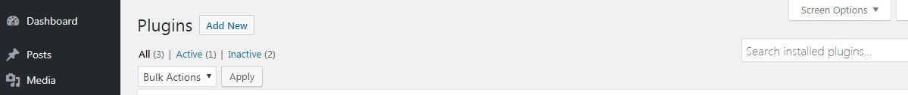
Then choose the zipped file of the plugin in your directory that you saved and click open, wordpress will do the installation. Click on 'Activate'
Figure 2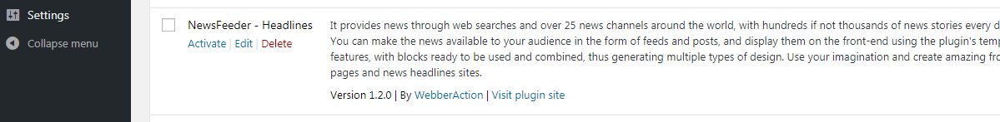
Ready! The plugin is installed and activated.
Figure 3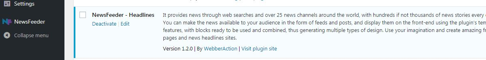
This is the page of Welcome. Next door is the access menu.
Figure 4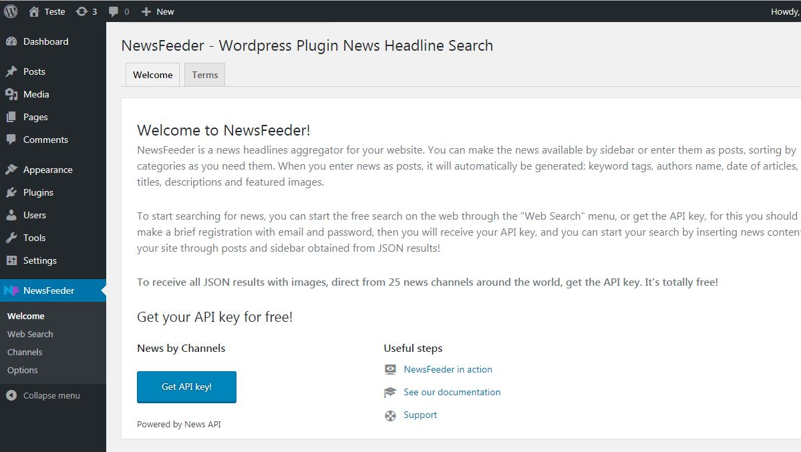
The page has 2 tabs, the 'Welcome' tab and the 'Terms' tab.
In the 'welcome' tab are the initial quick instructions, and the 'Get API key' button to acquire the API key, which will be required to receive the news through channels from around the world. Also on this page are the external links 'NewsFeeder in action' to view the plugin in action, 'See our documentation' to access this documentation, and 'Support' for the contact with our team.
In the 'Terms' tab are some basic explanations about the terms of use, they are not restrictions or limitations, only some guidelines on the responsibilities and functions that are directly or not related to the plugin, since it depends on external services for their full functioning.
Let's explore a little more? Go to the next topic!
Important! You need an internet connection to use the external feed results in the plugin. Make sure your internet has a good connection and is not overloaded.
Below is the 'Web Search' menu and page. It starts with the search field, and does not require an API key.
Figure 5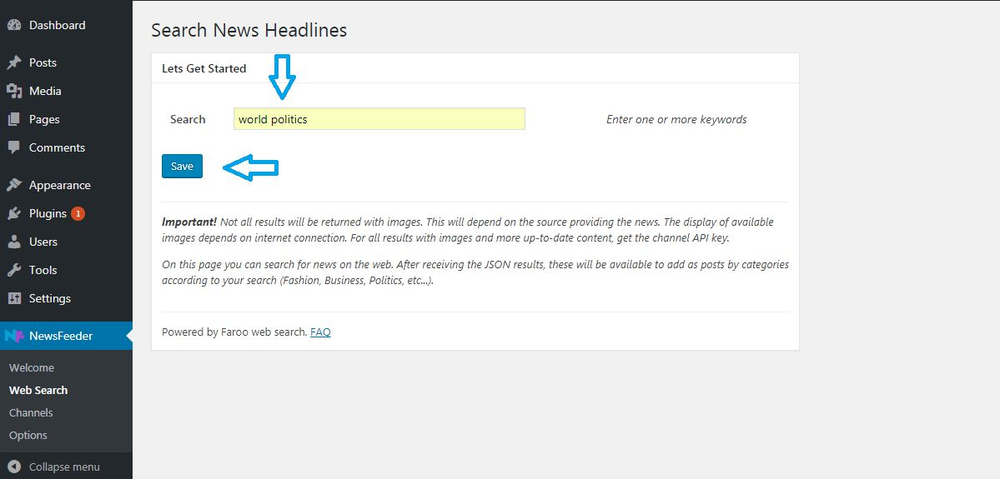
Just enter your search information, and you will be directed to the results page, as shown in Figure 6 below:
Figure 6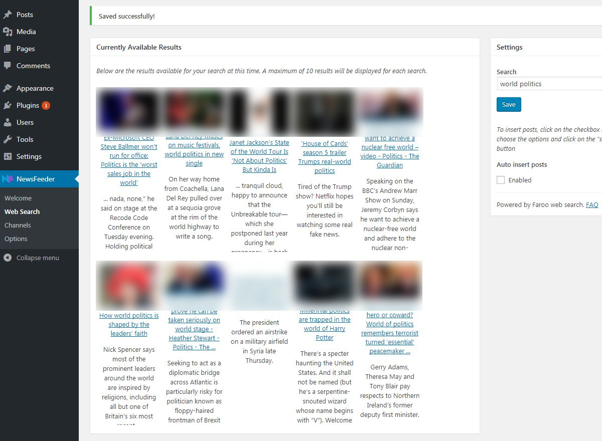
After clicking on the 'Auto insert posts' checkbox, the following options will be shown:
Figure 7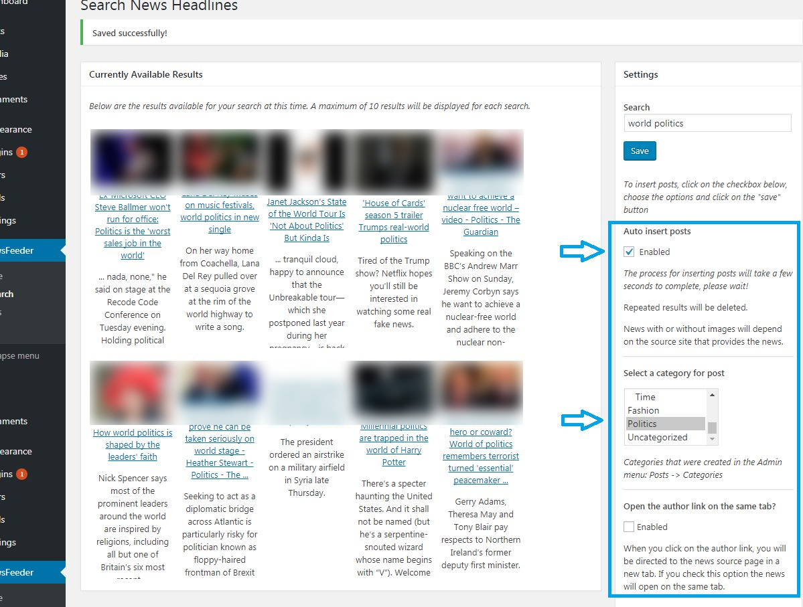
Tip! When entering this page through the menu, always update the results in the 'Save' button before clicking on the 'Auto insert posts' checkbox to insert posts. If you choose to insert posts, wait 30 to 60 seconds to complete, depending on the size of the images and your internet connection. Larger images take longer to insert.
If external results are not currently available, you will not be able to enter posts.
After successfully completing the insertion of posts, the message will be displayed at the top of the page as shown below:
Figure 8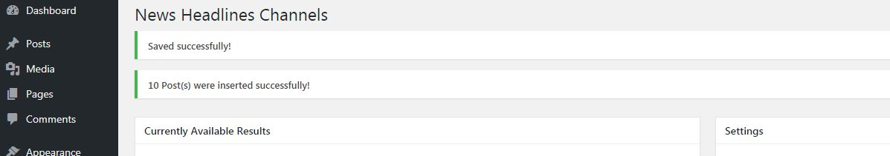
Existing posts will be updated.
Figure 9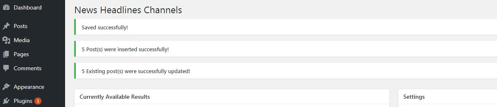
As 'Figure 7', the first available option for the posts are the categories that you intend to enter the results. To do this, you must create the categories for each post, just go to the 'Posts' menu and the 'categories' submenu in the admin menu.
If you do not create or choose any category, the posts will be included as 'Uncategorized'.
After creating the required categories, they will be available in the 'Select a category for post' dropdown menu as shown in figure 11 above.
Following is the checkbox 'Open the author link on the same tab?'. Each inserted post will have available the link from the original source of the news, by default the links will be directed to a new tab, if you choose to click on this option, they will open in the same tab.
To insert the posts, after choosing the options mentioned above and shown in 'Figure 7', it is only necessary to click on the 'Auto insert posts' checkbox and click on the 'Save' button. All 10 results for the search in question will be inserted into the WordPress database in the 'wp_posts' table.
The posts will be available in the 'Posts' menu, and the images available for each post will be inserted in the 'Media' menu.
In the post menu is displayed the attributes of the post, such as 'Title', 'Categories', 'Tags' and 'Date'.
All these attributes will be available on your website, fully functional. For more details, go to topic menu 'Post Templates'.
After choosing the options, click the 'Save' button and wait 30 to 60 seconds for the posts to be included.
Important! You need an internet connection to use the external feed results in the plugin. Make sure your internet has a good connection and is not overloaded.
In this panel you have the opportunity to get results through an API key. The advantage is that you get daily news headlines made every day by channels dedicated to delivering quality content.
In the 'Channels' menu we have the initial screen with the available channels and the field for insertion of the API key. To get the API key, make a brief registration here.
Figure 10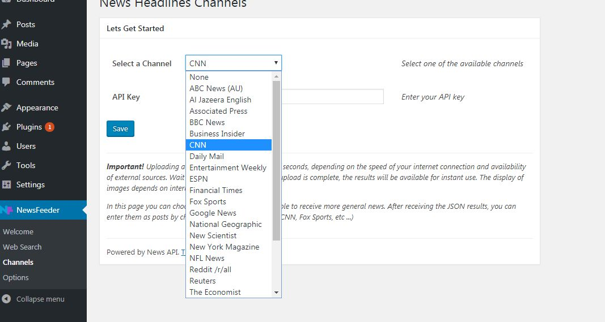
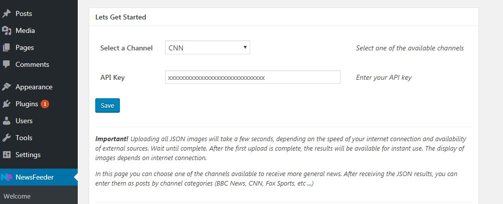
After obtaining your API key, enter in the 'API Key' field, select the desired channel and click the 'save' button. The page will return the results to the chosen channel. Each query will return 10 results per channel, each result is updated according to channel availability.
These results will now be available for the 'Channel News' widget in the Headline Feeds format. You can display them in the Sidebar for example, and you can also include them as posts as illustrated below:
Figure 12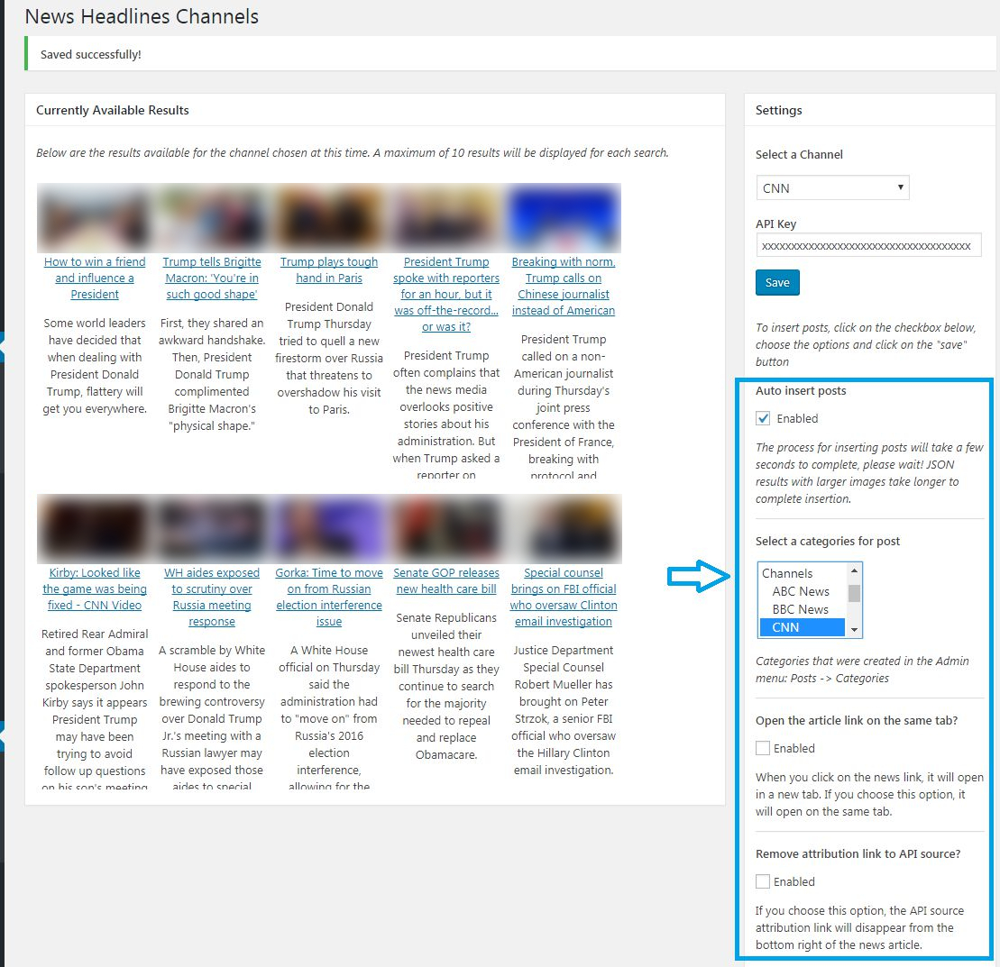
Tip! When entering this page through the menu, always update the results in the 'Save' button before clicking on the 'Auto insert posts' checkbox to insert posts. If you choose to insert posts, wait 30 to 60 seconds to complete, depending on the size of the images and your internet connection. Larger images take longer to insert.
If external results are not currently available, you will not be able to enter posts.
Note: Inserting posts through the 'Associated Press' channel may take up to 2 minutes or more to complete, because all posts have their featured image in full size, the time may also vary depending of your internet connection.
This can happen with any channel that provides at a given moment all posts with full-size featured images, but usually happens with the channel described above.
As 'Figure 12', you can choose which category or channel the posts will be inserted in. (To do this, you must first create categories / subcategories and or channels in the 'Posts' / 'Categories' menu of WordPress).
Following, in the first option as detailed in the previous topic, is the checkbox 'Open the author link on the same tab?'. Each inserted post will have available the link from the original source of the news, by default the links will be directed to a new tab, if you choose to click on this option, they will open in the same tab.
In the second option we have the checkbox 'Remove attribution link to API source?', Which as the name says, serves to remove the API source link that makes all channels available.
After inserting the posts will be shown the result according to an example shown in figures 8 and 9.
In the 'Clear Settings' tab we have the following options:
If you want to clean your database after uninstalling the plugin, you can delete options and posts inserted in the database through the image checkboxes below:
Back-end:
Figure 13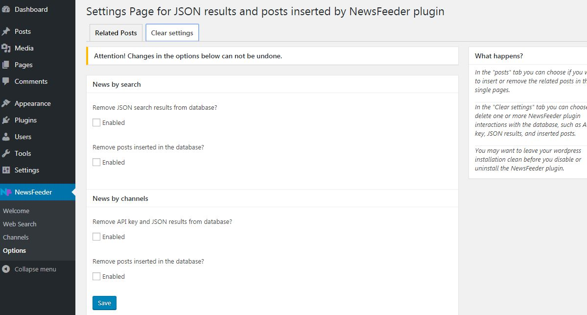
'News by Search'
1. 'Remove JSON search results from database?' - Removes all options entered on the 'Web Search' menu item page.
2. 'Remove posts inserted in the database?' - Removes all inserted posts through the 'Web Search' menu item page.
'News by Channels'
1. 'Remove API key and JSON results from database?' - Removes all options entered on the page of the 'Channels' menu item.
2. 'Remove posts inserted in the database?' - Removes all inserted posts through the page of the 'Channels' menu item.
Note: Removing posts as shown in the options in 'Figure 13' above will remove all posts in the database securely.
All posts will be inserted in the default form, they will be available in the 'Posts' menu of WordPress, and can be used in any WordPress theme.
Below the 'Posts' menu
Figure 14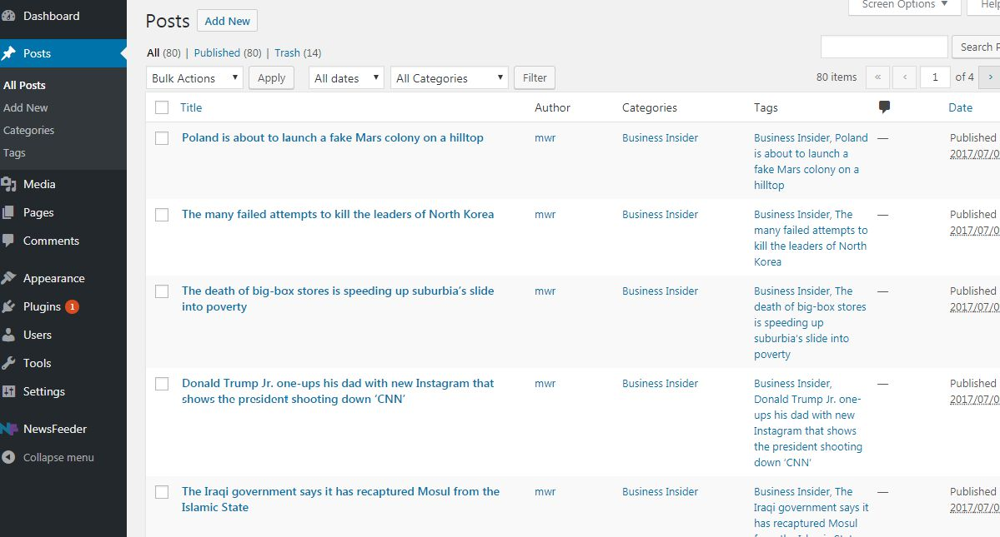
Important! If you delete a post from this panel above in 'Figure 14', do not forget to delete the corresponding image in 'Media' menu as 'Figure 16', because the image will be deprecated and will only take up space in the database of your site. Each image corresponds to a post and you can see the title of the post in the 'Uploaded to' field in the 'Media' menu.
Note: if you are going to delete a post, you should delete the post permanently from the database, so select the post (s) through the checkbox, then choose 'Move to Trash' option in the 'Bulk Actions' dropdown, and 'Delete Permanently' in the 'Trash' link.
Disregard the instructions above if you use the options shown in 'Figure 13'.
'Categories' submenu
Figure 15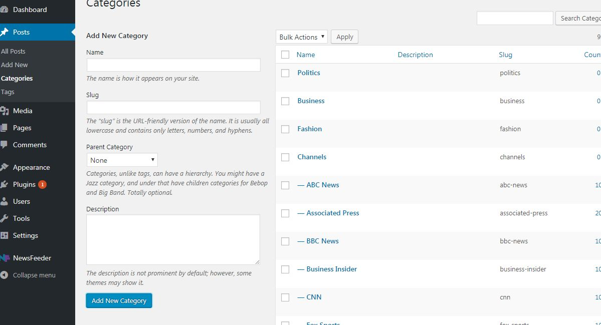
And all images available on 'Media' menu.
Figure 16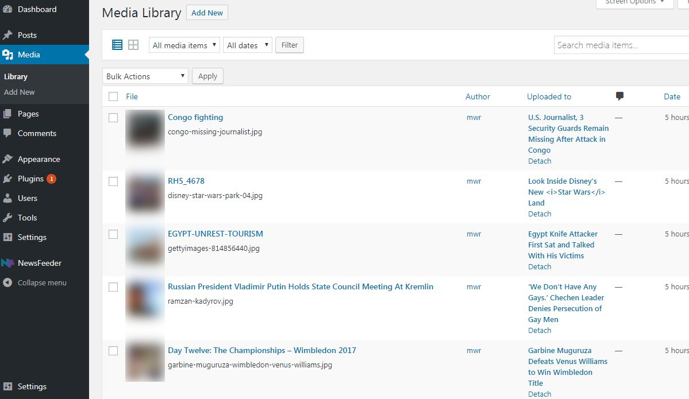
Important! If you delete some image do not forget to delete the corresponding post if this exists. Each image shows the corresponding post title in the 'Uploaded to' field on the 'Media' menu as shown in Figure 16 above.
This will avoid some eventual inconsistency if some post is updated through the feeds, as for example, updated posts without images, since in the update of the post will not be inserted again the corresponding featured image, but will be used the image already inserted in the database , and this image could be the one you deleted. So when deleting images, do not forget to delete the corresponding post, so that instead of being updated, it will be inserted from scratch with all resources including images.
Disregard the instructions above if you use the options shown in 'Figure 13'.
The default page of WordPress will display them in the standard way, with highlighted texts and images, and with single pages, related posts, tags.
Post page list
Figure 17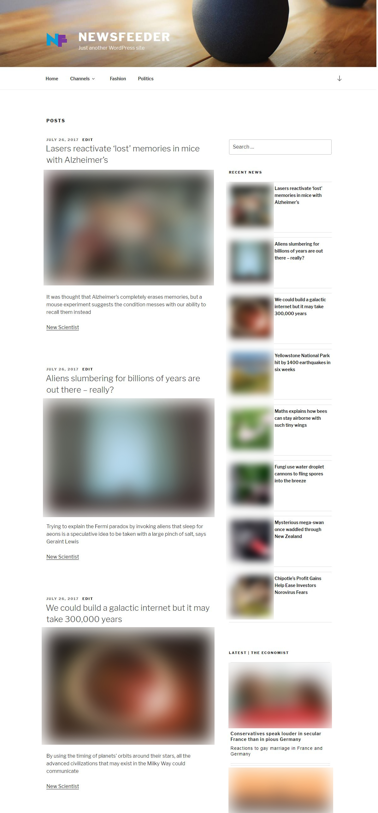
You can display your news on custom pages easily and with a pleasant look with Add Front Post plugin. Ideal for news sites and electronic magazines.
To learn more, watch the video below. Add custom front pages, with sliders, gallery sliders, image gallery, grids and more.
You can customize some colors in the frontend by going to 'Appearance -> Customize' in the WordPress menu.
You will see the WordPress Customizer screen, go to the 'NewsFeeder Colors' section, and you will see the following options:
1. 'Headline title' - Defines the colors for the titles of the posts.
2. 'Link hover' - Defines the colors for the link when the mouse is positioned above it.
3. 'Widget title' - Sets the colors for the title of the widget section.
4. 'Widget "VIEW ALL" link' - Defines the colors for the 'VIEW ALL' link as shown below.
5. 'Widget "VIEW ALL" background' - Defines the colors for the background of the link as show below.
Before uninstalling the plugin you may want to leave your database clean of the information processed by the plugin, to do this until the 'NewsFeeder -> Options' menu of the plugin and click on the tab 'Clear Settings', then choose the options that you find Or simply check all and click the 'Save' button.
To uninstall the plugin, just go to 'Plugins' and go to 'NewsFeeder - Headlines', click on 'Deactivate'. If you wish to remove it simply click on 'Delete', or 'Activate' if you wish to activate it again.
This plugin uses the following third-party features:
Team